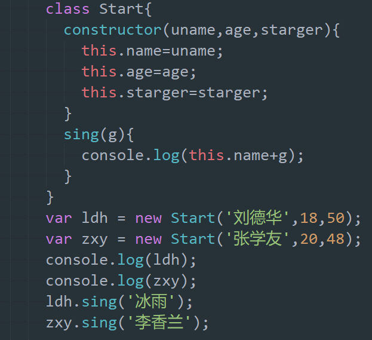

javaScript中的面向对象概念(ES6)
1. 什么是对象？
1. 现实生活中:万物皆对象，对象是一个具体的事物，看的见摸得着的实物。例如，一本书、一辆汽车、一个人可以是"对象"，一个数据库、一张网页、一个与远程服务器的连接也可以是"对象"(千万别理解成那个对象)。
2. 在javaScript中,对象是一组无序的相关属性和方法的集合，所有的事物都是对象，例如字符串、数值、数组、函数等。
3. 面向对象更贴近我们的实际生活，可以使用面向对象来描述现实事物，但是事物分为具体的事物和抽象的事物。
比如:手机 抽想的(泛指的) 具体的(特指的)
4. 对象是由属性和方法组成的。
- 属性：事物的特征，在对象中用属性来表示(常用名词)
- 方法：事物的行为，在对象中用方法来表示(常用动词)
2. 面向对象的思维特点
1. 抽取(抽象)对象共用的属性和行为组织(封装)成一个类(模板)。
2. 对类进行实例化，获取类的对象。
3. 面向对象编程我们考虑的是有哪些对象，按照面向对象的思维特点不断的创建对象，使用对象，指挥对象做事情。
3. 类 class
在ES6中新增加类的概念，可以使用关键字声明一个类，之后这个类来实例化对象。
类抽象了对象的公共部分，它泛指某一大类。比如:手机 苹果
例子：对象特指某一个，通过类实例化一个具体的对象。比如我正在吃苹果。
4. 创建类
语法：class 类名{//代码内容}
var xx = new Uname
注意：类必须new来实例化对象
5. constructor构造函数
constructor()方法是类的构造函数(默认方法)，用于传递参数，返回实例对象,通过new命令生成对象实例时，自动调用该方法，如果没有显示定义，类的内部会自动给我们创建一个constructor()
实例：
